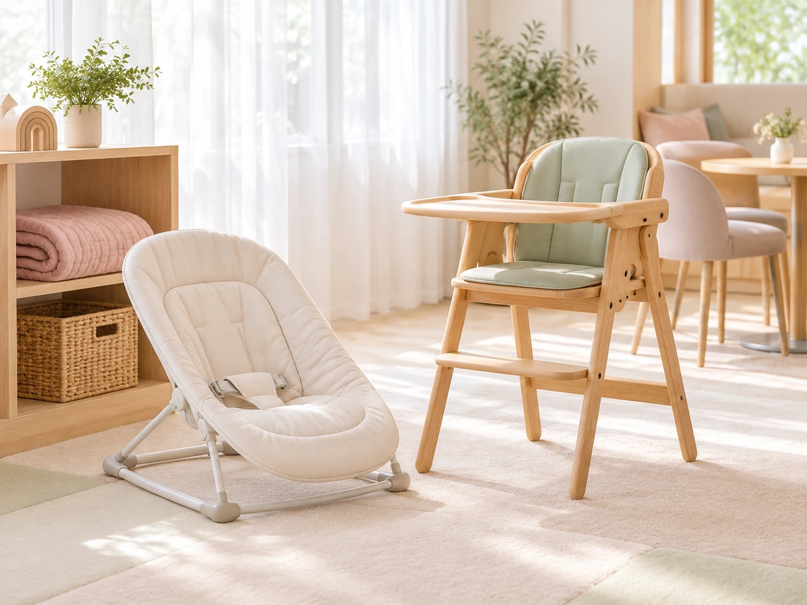

CONCEPT
ママたちの
「あったらいいな」から
チェリッシュカフェを運営するのは、秋田の「ママたちが作った」会社、合同会社CHERISHです。 子育て中の「こんなことがあったらいいな」を形にしようと、親子カフェのほかに、 ベビーやママ向けのレッスン、子育て応援の情報誌なども手がけています。
Chérish
英語で「大切にする」という意味の言葉です。赤ちゃんとママ、どちらの時間も大切にするカフェです。
公式サイトでは、このカフェをこう紹介しています。
ママがほっと一息つける親子カフェ 合同会社CHERISH 公式サイトより
赤ちゃん連れの外出をあきらめていたママが、安心してランチを楽しめる場所です。
